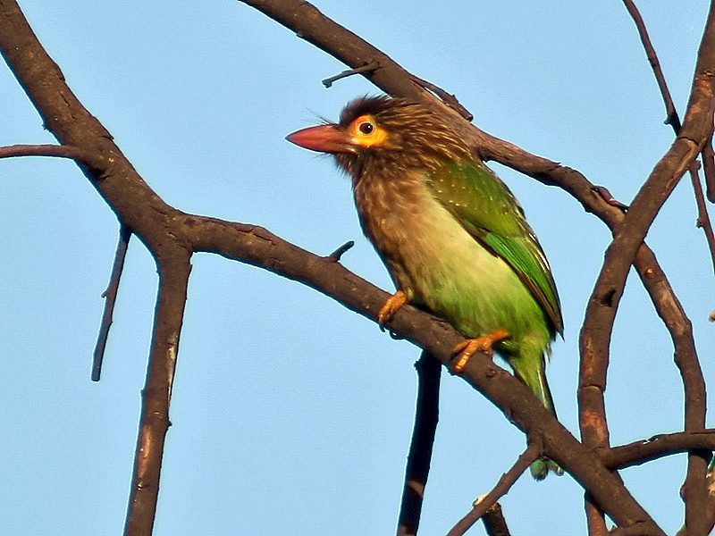

बड़ा बसंताBrown-headed Barbet
Psilopogon zeylanicus · Ramphastidae · BRD-0154

- Scientific nameवैज्ञानिक नाम
- Psilopogon zeylanicus (Gmelin, 1788)
- Familyकुल
- Ramphastidae
- Hindiहिंदी
- बड़ा बसंता
- Local namesस्थानीय नाम
- bada basanta, bara basanta, basanta, brown headed barbet, large green barbet
- Status hereयहाँ की स्थिति
- native
- Movementआवागमन
- Resident, here all year
- IUCNIUCN
- LC
- Reviewसमीक्षा
- audited and independently read
When to look कब देखें
Present all year.साल भर मौजूद।
Uses and possibilities उपयोग और संभावनाएँ
Drawn from the documented uses in the profile below, where each is labelled traditional, current or a research lead. All uses →
Tell it apart from इनसे अलग पहचानें
बड़ा बसंता / Brown-headed Barbet
Psilopogon zeylanicus (Gmelin, 1788) — Ramphastidae
बड़ा बसंता — यह हरी चिड़िया मोटे चेहरे के साथ होती है, और पेड़ों पर फल खाती है। इसका नाम "बसंता" शायद इसलिए है कि यह बसंत ऋतु में ज़ोर-ज़ोर से बोलती है। यह पक्षी फलों को खाता है और उन्हें अलग-अलग पेड़ों पर बिखेर देता है। इसकी चहचहाहट बहुत ज़ोरदार होती है, खासकर सुबह जब कई चिड़िया एक साथ बोलती हैं।
Quick Identification त्वरित पहचान
| Feature | Description |
|---|---|
| Size | Large barbet, 27–28 cm; stocky, heavy-set |
| Plumage | Predominantly green; brown head and face |
| Crown | Brown or dark brown cap |
| Face | Brown with dark markings and spots |
| Bill | Very thick, heavy, pale or greenish; adapted for drilling |
| Underparts | Green with white spots or streaks on breast and belly |
| Eyes | Dark, surrounded by pale eye-ring |
| Tail | Short, green |
Field tip: A stocky, large green barbet with a brown head is unmistakable in eastern UP. Look for it in fruiting trees; it often perches quietly while feeding but is vocal, particularly in the early morning or during breeding season. The heavy bill and short tail are distinctive.
हिंदी — कैसे पहचानें:
बहुत बड़ी, हरी चिड़िया।
भूरा सिर और मोटा नीला चेहरा।
अत्यंत मोटी चोंच।
पेड़ों पर फल खाती है।
Morphology आकारिकी
Biometrics:
| Measurement | Range |
|---|---|
| Total length | 270–280 mm |
| Wing (flattened chord) | 145–160 mm |
| Tail | 90–100 mm |
| Bill | 32–38 mm |
| Tarsus | 18–20 mm |
| Weight | 170–210 g |
Plumage: Head and face brown to dark brown. Crown darker than cheeks. Malar region (cheeks) with dark streaking. Upper back and wings bright green. Lower back and rump green. Underparts green with white spots and streaks on breast and belly. Wing and tail feathers green with darker edges. Undertail coverts greenish-white.
Head: Large, thick-skulled. Crown brown; face marked with brown and dark streaking. Eye-ring pale to whitish.
Bill: Extremely thick and heavy, pale greenish or yellowish; used for drilling in wood to find insects and for excavating nesting cavities.
Eyes: Dark brown; forward-facing, providing binocular vision for locating insects and fruits.
Legs: Short, grey or brownish; zygodactyl (two toes forward, two backward), typical of piciform birds.
Sexes: Males and females similar; males may have slightly darker face markings.
Juveniles: Duller than adults; brown on head less pronounced; underparts less spotted initially.
Vocalisations
Highly vocal, with loud and distinctive calls:
- Main call: A loud, rapid tok-tok-tok-tok.. repeated in series; sounds like a mechanical drumming or knocking on wood.
- Territorial song: A loud, raucous toot-toot-toot or krr-krr-krr given from high perches.
- Contact call: Softer chirps between pairs.
हिंदी: बहुत तेज़ आवाज़। सुबह बहुत शोर मचाता है।
Behaviour & Ecology व्यवहार और पारिस्थितिकी
Frugivore and insectivore: The Brown-headed Barbet's diet consists of:
- Fruits of fig trees, mulberry, and other mast-fruiting trees
- Insects and larvae (particularly wood-boring insects)
- Nectar (occasionally)
Foraging behaviour: Feeds in fruiting trees, often in small flocks in the breeding season, larger groups post-breeding. Moves among fruiting trees; captures insects by probing bark and exploring branches. Occasionally takes insects in short sallies from perches.
Breeding season ecology: Pairs become highly vocal during breeding season (April–August), defending breeding territories. Males perform displays and call loudly to attract mates and maintain territory.
Nesting: Excavates cavities in dead or soft wood of trees; uses the same tree for multiple years if undisturbed.
Resident: Year-round resident on the Indian subcontinent; may show local movements in response to fruit availability.
Ecological role: Important seed disperser; by consuming and dispersing fruits of fig and other mast-fruiting species, it helps maintain forest regeneration.
हिंदी: पेड़ों के फलों पर निर्भर है। कीड़े भी खाता है। बहुत ज़ोरदार चिड़िया है।
Life Cycle / Phenology जीवन चक्र
Resident: Present year-round in suitable forested and semi-open habitat.
Breeding: March to August; peak April–June. Territorial and vocal during breeding season.
Nesting: Excavates cavity in dead or soft wood of tree; nest cavity approximately 15–20 cm deep. Both sexes participate in excavation.
Eggs: 2–4 white eggs; incubation approximately 13–14 days.
Nestling: Young remain in nest approximately 23–26 days; dependent on parents after fledging.
Fledging: June–August; juveniles remain with parents through monsoon and early winter.
Fruit dependence: Movements influenced by fruiting patterns of mast-fruiting trees.
हिंदी: बसंत में अंडे देता है। पेड़ों के सूखे हिस्सों में घोंसले बनाता है।
Host Plants or Prey आहार
| Food Type | Examples | Availability |
|---|---|---|
| Figs | Various Ficus species | Year-round with seasonal peaks |
| Other fruits | Mulberry, date palm, guava | Seasonal |
| Wood-boring insects | Cerambycid beetles, wood moths | Year-round |
| Bark insects | Various insects in bark crevices | Year-round |
| Nectar | Various flowering trees | Seasonal |
हिंदी: मुख्य रूप से अंजीर और पीपल के फल खाता है। कीड़े भी निकालकर खाता है।
Predators / Natural Enemies शत्रु
- Raptors: Shikra and other small eagles
- Crows and corvids: Occasionally depredate eggs or chicks
- Snakes: May enter nesting cavities
- Monitor lizards: May predate eggs or young
- Habitat loss: Primary threat; loss of fruiting trees and nesting sites
हिंदी: बाज़ और कौवे का खतरा। पेड़ों के कटने से घोंसले मिलना मुश्किल हो गया है।
Agricultural / Human Relevance कृषि प्रासंगिकता
Protected species: Listed in Schedule IV of the Wildlife (Protection) Act 1972, amended 2022. As with all wild birds in India, the species has full legal protection.
Seed dispersal service: By consuming fruits of fig and other trees and dispersing seeds, the Brown-headed Barbet provides an important ecosystem service in forest regeneration and agricultural landscaping.
Pest control: Its consumption of wood-boring insects provides some benefit in managing forest health, though this is not a primary ecological role.
Tolerance of cultivation: Unlike many barbets, the Brown-headed Barbet tolerates and even benefits from cultivated landscapes with scattered fruiting trees, such as gardens, village groves, and plantations.
Noise complaint: In villages, the loud calls during breeding season may be perceived as noise pollution by some residents.
हिंदी: विधि अधिनियम 1972 के तहत संरक्षित है। बागों और गाँवों के पेड़ों में सहज़ता से रहता है।
Expected Locally स्थानीय रूप से अपेक्षित
Not a field record. Written from published accounts for eastern Uttar Pradesh. No confirmed local sighting yet — if you have seen it, that is what the atlas needs.
अभी तक स्थानीय पुष्टि नहीं। यह विवरण प्रकाशित स्रोतों से है, किसी अवलोकन से नहीं।
The Brown-headed Barbet is expected as a year-round resident in forested areas, forest edges, and cultivated landscapes of Basti and Ayodhya districts, wherever fruiting trees such as fig and neem are present. The species should be looked for in village groves, mango orchards, and forest margins. The loud calls in the early morning (particularly during breeding season, April–June) are often the first sign of presence. A first record would be a clear photograph showing the brown head, green body, and thick bill, with date and location.
हिंदी: गाँवों और बागों के पेड़ों में, विशेषकर अंजीर और पीपल के पास।
Distribution वितरण
Global range: Indian subcontinent, from the Himalayas (up to 1,800 m elevation) through peninsular India to Sri Lanka.
In India: Widespread in suitable forest and semi-open habitat throughout mainland India and Sri Lanka.
In Uttar Pradesh: Present throughout the state in suitable forested and semi-open areas.
In Basti district / eastern UP: Expected in forest areas, village groves, and cultivated landscapes with fruiting trees throughout Basti and Ayodhya districts.
Research Questions शोध प्रश्न
- How do Brown-headed Barbet populations respond to the loss of fruiting trees in agricultural landscapes? Are there preferred tree species?
- क्या यह चिड़िया बसंत ऋतु में अधिक आवाज़ करती है? How do call rates vary seasonally?
- What is the breeding success rate and cavity reuse pattern in eastern UP?
- Do birds show any seasonal movement in response to fruit availability?
- How important are cultivated fruiting trees (mango, guava, date palm) versus wild fruiting species in the diet?
- What is the minimum number of fruiting trees required to maintain a viable breeding population in a village grove?
Similar Species मिलती-जुलती प्रजातियाँ
| Species | How to distinguish | हिंदी | Field Rule | |
|---|---|---|---|---|
| [[coppersmith_barbet\ | Coppersmith Barbet]] (Psilopogon haemacephalus) | Much smaller; crimson forehead and breast patch, yellow throat, streaked underparts; the metallic tuk-tuk-tuk | छोटा बसंता | A small barbet with a red forehead and breast patch is a Coppersmith; a large brown-headed one with a bare yellow eye-patch is the Brown-headed |
| Black-capped Barbet (Psilopogon faber) — if range overlaps | Smaller (22–23 cm); black cap; more northerly distribution | काली टोपी वाला बसंता | Black-capped is smaller with black cap; Brown-headed is larger with brown head. |
Field rule: Large green barbet with brown head and extremely thick bill. The large size, brown head, and loud calls in early morning distinguish it from all other barbets.
Taxonomy & Classification वर्गीकरण
Original description. Described by Johann Friedrich Wilhelm Gmelin in 1788 as Bucco zeylanicus. Type locality: Ceylon (Sri Lanka), from which the scientific name derives.
Subspecies. The species shows some geographic variation, with three subspecies recognised, but Psilopogon zeylanicus zeylanicus is the form in eastern UP.
Family and order placement. Order Piciformes; family Ramphastidae (barbets and toucans). The genus Psilopogon contains numerous barbet species found across South and Southeast Asia.
Phylogenetic notes. Molecular studies place the Asian barbets within a separate clade from African and other regional barbets.
IUCN status rationale. Assessed as Least Concern (LC) on the IUCN Red List. The species has a wide range and tolerates cultivated and semi-open habitats, though it remains dependent on fruiting trees.
हिंदी: भारत की मूल निवासी चिड़िया है।
Photo Gallery फोटो गैलरी
No photos yet — add field photos to media/species/brown_headed_barbet/ and run node scripts/sync_photos.js.
Wanted photos:
- Perched on fruiting tree
- In flight showing green plumage
- Close-up of head and thick bill
- At nesting cavity
- Feeding on figs
References संदर्भ
- Gmelin, J.F. (1788). Systema Naturae per regna tria naturae. 13th ed. Vol. 1, p. 408. Leipzig. [Original description]
- Ali, S. & Ripley, S.D. (1987). Handbook of the Birds of India and Pakistan. Vol. 7. Oxford University Press, New Delhi.
- Grimmett, R., Inskipp, C. & Inskipp, T. (2011). Birds of the Indian Subcontinent. 2nd ed. Christopher Helm, London.
- BirdLife International (2024). Psilopogon zeylanicus. IUCN Red List of Threatened Species. Ver. 2024.
- Rasmussen, P.C. & Anderton, J.C. (2005). Birds of South Asia: The Ripley Guide. Smithsonian Institution, Washington DC.
- GBIF Occurrence Data — Psilopogon zeylanicus, Uttar Pradesh (2010–2025).
Source file: species/fauna/birds/brown_headed_barbet.md